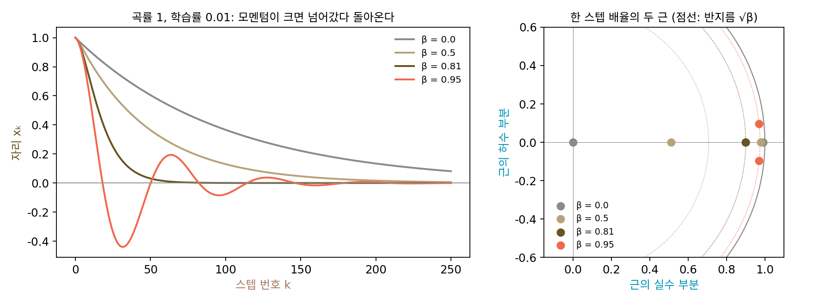
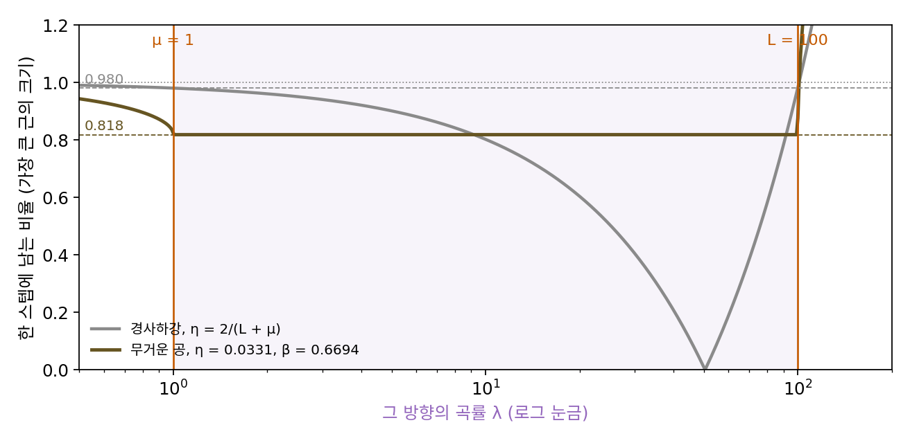

가속: 왜 조건수의 제곱근인가
조건수 100 그릇에서 지난 스텝을 더하는 비율을 바꿔 보면, 학습률 0.018에서 계수 0.8이 63스텝으로 가장 빨랐고 0.9는 131스텝, 경사하강은 381스텝이었다. 그 비교는 학습률을 0.018 하나로 묶어 두었는데, 학습률과 모멘텀 계수를 함께 가장 좋게 고르면 얼마나 빨라질까? 조건수가 100에서 10000으로 커지면 모멘텀에 필요한 스텝 수는 어떻게 바뀔까? 경사하강은 학습률을 아무리 잘 골라도 스텝 수가 조건수에 비례했다. 스텝 수의 표에서 모멘텀이 몇 배를 벌어 주는지는 보이지만, 그 배수가 어디서 오는지는 아직 모른다.
역사: 폴랴크가 보인 것과 넘을 수 없는 하한
폴랴크의 1964년 논문이 남긴 것은 공을 굴리자는 생각보다 그 수렴 속도의 계산이었다. 2차 함수, 그리고 최소점 근처에서 2차 함수처럼 보이는 매끄러운 함수에서, 학습률과 모멘텀 계수를 알맞게 고르면 같은 정확도에 닿는 스텝 수가 경사하강의 약 √κ분의 1로 준다. 반세기 뒤 이 방법을 딥러닝으로 다시 끌어들인 서츠케버와 동료들(2013)도 폴랴크의 업적을 「최소점 근처에서 √κ분의 1의 스텝」으로 요약했다(κ는 최소점에서 곡률의 조건수).
그러면 더 영리한 방법으로 √κ보다 더 줄일 수는 없을까? 아르카디 네미롭스키(Arkadi Nemirovski)와 다비드 유딘(David Yudin)은 1979년 러시아어로 낸 책에서 이 물음에 거꾸로 답했다. 그 책은 1983년 『최적화에서 문제의 복잡도와 방법의 효율(Problem Complexity and Method Efficiency in Optimization)』이라는 제목으로 영어로 옮겨졌다. 함수에 대해 그래디언트만 물어볼 수 있는 방법이라면 어떤 것이든, 최악의 함수를 만나면 √κ에 비례하는 스텝보다 줄일 수 없다는 하한이다. 그래디언트만 쓰는 방법에게 √κ에 비례하는 스텝 수는 넘을 수 없는 하한이고, 2차 함수 위의 무거운 공은 그 하한에 이미 닿아 있었다.
한 방향만 떼어 보기
왜 하필 √κ인지는 방향 하나만 떼어 보면 알 수 있다. 그릇 ½(θ₁² + 100θ₂²)처럼 방향들이 서로 섞이지 않으면 무거운 공도 방향마다 따로 움직이기 때문이다. 조건수 100 그릇의 완만한 방향, 곧 곡률 λ = 1에 학습률 η = 1/L = 0.01을 쓰는 1차원 문제를 골랐다. 경사하강이 가장 오래 기어가는 바로 그 방향이다. 출발점 x₀ = 1에서 모멘텀 계수 넷으로 걸어 보면(이후 줄곧 |x| < 0.01이 되는 스텝 수):
| β | x₁₀ | x₂₀ | x₄₀ | 늘 0.01 안 | 가장 깊이 넘어간 자리 |
|---|---|---|---|---|---|
| 0 | 0.904 | 0.818 | 0.669 | 459스텝 | 넘어가지 않음 |
| 0.5 | 0.832 | 0.677 | 0.448 | 225스텝 | 넘어가지 않음 |
| 0.81 | 0.697 | 0.365 | 0.074 | 63스텝 | 넘어가지 않음 |
| 0.95 | 0.566 | −0.111 | −0.308 | 170스텝 | −0.440 |
0.81까지는 한쪽에서 점점 빨리 다가가고, 0.95에서는 바닥을 지나 −0.44까지 넘어갔다가 출렁이며 돌아온다. 넘어가지 않는 가장 큰 계수 근처가 가장 빠르다.
이 1차원 스텝을 식으로 보자. 곡률 λ인 방향에서 그래디언트는 λx이므로 한 줄로 합친 업데이트는 xₖ₊₁ = (1 + β − ηλ)xₖ − βxₖ₋₁이다. 지금 자리와 바로 앞 자리 둘로 다음 자리가 정해진다. 경사하강이라면 스텝마다 같은 배율이 곱해졌으니, 여기서도 xₖ = rᵏ 꼴을 넣어 보면 배율 r이 다음 2차 방정식을 풀어야 한다.
근이 둘이므로 스텝은 두 배율의 섞임이고, 둘 가운데 큰 것이 수렴 속도(스텝마다 거리가 줄어드는 비율)를 정한다. 표의 네 계수에서 근은 β = 0이면 0.99 하나, 0.5면 0.9796과 0.5104, 0.81이면 0.9와 0.9로 겹치고, 0.95면 0.97 ± 0.0954i라는 복소수 한 쌍이다. 복소수 배율은 스텝마다 크기만큼 줄면서 돌아가는 것이라, 0.95에서 바닥을 지나 출렁인 것이 이것이다.
이 절의 핵심은 2차 방정식의 두 근을 곱하면 상수항 β가 된다는 데서 나온다. 근이 복소수 한 쌍이면 두 근의 크기가 같으므로 두 근의 크기는 둘 다 √β이고, 곡률 λ가 얼마이든 상관없다. 실제로 β = 0.81로 두고 ηλ를 0.01, 0.1, 0.5, 1, 2, 3, 3.5로 바꿔도 근의 크기는 모두 0.9다. 근이 복소수가 되는 범위는 (1 − √β)² < ηλ < (1 + √β)², 이 경우 0.01에서 3.61 사이다(3.7이면 근 하나가 1.2331로 커져 터진다). 곡률이 361배 차이 나는 방향들이 모두 스텝마다 똑같이 0.9배씩 준다.

그러면 할 일은 하나다. 그릇의 모든 곡률, 곧 가장 작은 μ부터 가장 큰 L까지가 복소수 범위에 들게 η와 β를 고르고, 그 안에서 √β를 되도록 작게 하면 된다. 범위의 양 끝을 ημ = (1 − √β)², ηL = (1 + √β)²에 맞추고 두 식의 제곱근을 빼고 더하면 다음을 얻는다. 폴랴크가 고른 값이다.
조건수 100이면 η = 4/121 = 0.03306, β = (9/11)² = 0.6694이고, 한 스텝 배율은 곡률 1, 10, 50, 100인 방향 모두 9/11 = 0.818이다. 경사하강은 가장 좋은 학습률 2/(L + μ)를 골라도 가장 나쁜 방향의 배율이 (κ − 1)/(κ + 1) = 1 − 2/(κ + 1) = 0.980이었다. 1과 배율의 차이가 2/(κ + 1)에서 2/(√κ + 1)로 바뀌었고, 거리를 1/1000로 줄이는 스텝 수는 1과 배율의 차이에 반비례하므로 κ에 비례하던 것이 √κ에 비례하게 된다. 이렇게 그래디언트만 쓰면서 스텝 수를 조건수 대신 조건수의 제곱근에 비례하게 줄이는 일을 가속 (조건수의 제곱근만큼 빨라지기 / acceleration)이라 한다. 출발 (1, 1)에서 바닥 0.001 안에 들기까지:
| 조건수 κ | 경사하강(가장 좋은 η) | 무거운 공(폴랴크의 η, β) | 비 | √κ |
|---|---|---|---|---|
| 10 | 37 | 16 | 2.3 | 3.2 |
| 100 | 363 | 58 | 6.3 | 10 |
| 1,000 | 3,628 | 204 | 17.8 | 31.6 |
| 10,000 | 36,272 | 708 | 51.2 | 100 |
조건수가 10에서 10000으로 천 배 커질 때 경사하강의 스텝은 약 980배, 무거운 공은 약 44배 늘었다(√1000 ≈ 32). 폴랴크의 값에서는 곡률이 μ, L인 두 방향의 근이 저마다 겹쳐 거리가 k × rᵏ 꼴로 줄기 때문에, 배율만으로 어림한 것보다 스텝이 조금 더 든다.

그림의 갈색 선이 평평하다는 것이 이 장의 처음 물음에 대한 답이다. 뉴턴법은 방향마다 곡률로 나눠서 모든 방향의 배율을 0으로 만들었지만, 무거운 공은 방향마다의 곡률을 계산하지 않는다. 가장 큰 곡률과 가장 작은 곡률 두 숫자만 알고 학습률과 계수를 맞춰 두면, 그 사이의 모든 방향이 같은 배율로 줄어든다. 곡률을 직접 계산하지 않고 그 효과를 흉내 내는 첫 방법이다.
ML에서: 곡률을 흉내 낸다
서츠케버와 동료들은 모멘텀이 2차 방법과 닮은 점을 이렇게 적었다. 곡률이 낮은 방향은 정의상 그래디언트가 천천히 바뀌므로 그 방향의 내리막이 여러 스텝 이어지고, 모멘텀은 그것을 쌓아 키운다. 2차 방법도 곡률이 낮은 방향의 스텝을 키우지만, 쌓는 대신 방향마다 곡률의 역수를 곱한다. 신경망의 헤시안은 10¹⁶ 칸이라 역수를 곱할 수 없으니, 쌓아서 키우는 모멘텀이 실제로 쓸 수 있는 방법이다.
다만 이 절의 계산에는 두 가지 단서가 붙는데, 하나는 그래디언트를 정확히 안다는 가정이다. 미니배치(한 스텝에 쓰는 데이터 묶음)로 어림한 그래디언트에는 노이즈가 섞이는데, 서츠케버와 동료들도 이론이 말하는 최소점 근처에서의 가속 이득은 노이즈가 있으면 사라진다고 적었다. 그들은 대신 바닥에 이르기 전, 내리막의 방향이 여러 스텝 이어지는 앞 단계에서 모멘텀이 크게 돕는다고 보았다. 다른 하나는 μ와 L를 알아야 한다는 것인데, 신경망에서는 두 숫자를 미리 아는 일이 없어서 0.9 같은 값을 실험으로 고른다.
문제 4. 자동차의 충격 흡수기
자동차 바퀴의 충격 흡수기를 10 cm 눌렀다 놓는다(처음 속도 0). 1초마다 바퀴의 자리 x는 「x − 0.04x + β × (x − 1초 전의 x)」로 바뀐다고 하자(용수철이 0.04x만큼 되돌리고, 지난 움직임의 β배가 이어짐). (가) β = 0.3, 0.64, 0.9일 때 바퀴가 이후 줄곧 0.1 cm 안에 머무는 것은 몇 초부터인가? (나) 어느 β가 가장 빠르고, 그 β는 어디서 나오는가? (풀어 본 뒤 위젯 2의 「문제 4 불러오기」로 확인해 보자.)

지난 움직임을 많이 이어 갈수록 빨리 돌아오겠죠. 0.9가 제일 빠를 거예요. 돌려 보면… 처음 다섯 초는 9.6, 8.86, 7.83, 6.6, 5.22로 셋 중에 제일 빨리 내려와요.

0.1 cm 안에 머무르기 시작하는 때는요?

0.9는 84초예요. 0이 되는 자리를 지나 반대로 4.36 cm까지 튀어 오르고 몇 번 출렁여요. 0.3은 77초, 0.64는 30초. 0.64가 제일 빠르네요.

0.3은 반대로 넘어가지는 않는데 9.6, 9.1, 8.58, …로 느릿느릿 와. 스텝마다 곱해지는 배율이 1에 가까운가 봐. 2차 방정식의 근을 구해 볼게. 큰 근이 0.9413이네.
0.9는? 그건 출렁였잖아.
0.9는 근이 복소수라 크기가 √0.9 = 0.9487이야. 0.3보다도 1에 가까워. 그리고 0.64는… 두 근이 0.8로 겹치네.

두 근이 겹치는 0.64는 어떤 식에서 나오죠?

근이 겹친다는 건 판별식이 0이라는 거니까… 근이 실수에서 복소수로 넘어가는 경계 (1 − √β)² = 0.04, 곧 √β = 0.8이에요.
그 경계보다 작으면, 또 크면 각각 어떻게 되죠?

작으면 큰 근이 √β보다 커서 느리고, 크면 근의 크기가 √β 그대로 커져서 느려요. 경계가 가장 빨라요. 미분방정식 시간에 배운 임계 감쇠예요. 감쇠가 모자라면 출렁이고, 넘치면 느리게 기어 오고요.

실제 자동차도 그렇게 맞춘다고 들었어요. 출렁이지 않는 범위에서 가장 빨리 멈추게. 과제 마감 알림을 너무 자주 보내면 다들 무시하다 몰려서 하고, 너무 드물면 잊어버리는 것처럼 딱 맞는 간격이 있는 거죠.
문제 5. 조건수를 잘못 짐작하면
조건수 100 그릇 ½(θ₁² + 100θ₂²)에서 가장 큰 곡률 L = 100은 안다고 하자. 조건수를 10, 50, 200, 1000으로 잘못 짐작해 μ = L/(짐작한 κ)로 놓고 폴랴크의 η, β를 쓰면 손실의 바닥(원점)까지 거리 0.001 안에 들기까지 몇 스텝이 걸리는가(출발 (1, 1))? 바로 짐작했을 때는 58스텝이다. 크게 짐작하는 쪽과 작게 짐작하는 쪽 가운데 어느 쪽이 덜 위험한가?
비슷하게만 맞으면 되겠죠. 짐작이 두 배 틀리면 스텝도 두 배쯤?
짐작한 조건수 10부터 돌려 보죠. 완만한 방향의 배율은요?

10으로 짐작하면 β = 0.2699라서 완만한 방향의 근이 0.968이에요. 스텝이 213이요. 58의 거의 네 배예요. 50으로 짐작하면 85스텝이고요.
크게 짐작한 쪽은 200이면 85, 1000이면 204스텝이야. 1000이라고 열 배 크게 짐작해도 204인데, 10이라고 열 배 작게 짐작하면 213이네. 비슷한데?

스텝 수는 비슷해요. 그런데 두 경우에 완만한 방향의 근이 실수인가요, 복소수인가요?
작게 짐작하면 실제 가장 작은 곡률 μ = 1이 짐작한 범위보다 아래에 있네요. 그럼 그 방향은 복소수 범위 밖으로 밀려나서 근이 실수가 되고, 경사하강처럼 한쪽에서 기어 와요.
크게 짐작하면요?
모든 방향이 복소수 범위 안이라 근의 크기가 √β = 0.9387로 같고, 출렁이면서 와요.
스텝 수는 213이랑 204로 비슷한데, 실수냐 복소수냐가 그렇게 중요해?
기어 오는 쪽은 √κ의 이득을 잃은 거고, 출렁이는 쪽은 이득은 그대로인데 √(짐작한 κ)만큼 걷는 거야. 짐작한 조건수가 실제와 가까울수록 좋긴 하지만 2배 틀려도 58이 85가 될 뿐이고. 해석학에서 상한을 넉넉히 잡아도 증명은 되는데 부등식이 느슨해지는 것과 같아.

실무에서 모멘텀을 0.9나 0.99처럼 좀 크게 잡는 게 그래서 덜 위험한 쪽이구나. 출렁이는 손실 곡선은 그 대가고요. 여행 경비를 넉넉하게 짐작하면 돈이 좀 남지만, 모자라게 짐작하면 여행 자체가 망가지는 거랑 비슷하네요.
문제 6. 모멘텀을 켜면 학습률의 벼랑은 어디로
조건수 100 그릇(L = 100, 출발 손실 50.5)을 50스텝 돌린 뒤의 손실로 학습률 찾기를 한다. (가) 경사하강(β = 0)에서 η = 0.019, 0.021의 50스텝 뒤 손실은? (나) β = 0.9를 켜고 같은 일을 하면 손실이 처음보다 커지는 학습률은 어디인가? (다) 가파른 방향 하나의 근으로 그 경계를 식으로 구하라.
경사하강은 0.019에서 0.0748이고 0.021에서 68만 9천으로 터져요. 벼랑이 2/L = 0.02에 있으니 맞아요. 모멘텀을 켜면 문제 2(학습률을 열 배 키운 것과 같은가)에서처럼 학습률이 열 배 되는 거니까 벼랑은 0.002로 당겨지겠죠.
0.021에서 모멘텀을 켜고 돌려 볼까요?
0.53이요. 안 터졌어요. 0.03에서 0.809, 0.037에서 2.56, 0.039에서 5.26 × 10¹⁴. 벼랑이 앞으로 당겨지기는커녕 거의 두 배 뒤로 밀려났어요.
문제 2(학습률을 열 배 키운 것과 같은가)에서 벽 사이를 오가는 방향은 학습률이 절반이 된다고 했잖아. 가파른 방향은 벽 사이를 오가니까 그 경우야. 그럼 벼랑이 뒤로 밀리는 게 맞는데, 어디까지 밀리는지는 모르겠어.
경사하강에서 터질 때는 한 스텝 배율이 어떻게 됐었죠?

−1보다 작아졌어요. 아, 그럼 근 하나가 −1을 지나는 자리를 찾으면 되겠네요. r = −1을 2차 방정식에 넣으면 1 + (1 + β − ηλ) + β = 0, 곧 ηλ = 2(1 + β)예요.
경계 ηλ = 2(1 + β)에 β = 0.9를 넣으면요?
η < 3.8/L = 0.038이에요. 0.037은 안쪽이고 0.039는 바깥이라 실험과 맞아요. ηL = 3.7이면 가파른 방향의 근이 크기 0.9487인 복소수인데, 3.9면 1.3162로 터져요. 경사하강의 「2/L보다 작게」가 모멘텀에서는 「2(1 + β)/L보다 작게」로 넓어지는 거예요. 정리에서 가정이 바뀌면 경계도 같이 옮겨 가는 것처럼요.
그럼 모멘텀을 켜거나 계수를 바꾸면 학습률 찾기를 다시 해야겠네요. 벼랑이 옮겨 갔으니까요. 다만 넓어진 벼랑 끝까지 lr을 올리면 출렁임이 커서 손실이 0.037에서도 2.56이나 남아요. 과속 단속 구간이 늘어났다고 끝까지 밟으면 승차감이 엉망인 거죠.